From the fundamental firing angle concept to three-phase fully controlled bridges — a complete, intuition-first study of phase-controlled rectifiers with every key formula, SVG circuit diagram, and GATE/IES concept explained from first principles.
Imagine you want to supply a DC motor with variable voltage from a fixed AC supply — without using a variable transformer (which is bulky, expensive, and slow to control). Phase control is the elegant electronic solution: by delaying the moment a thyristor switches on within each half cycle, we control exactly how much of the sine wave reaches the load.
A phase-controlled rectifier converts AC to a controllable DC by varying the firing instant of thyristors (SCRs). The average DC output voltage is a smooth, predictable function of the firing angle α. This is the backbone of DC motor drives, battery chargers, HVDC converters, and electrochemical processes.
AC-DC converters sit at the intersection of Circuit Theory (KVL/KCL during commutation), Signals (Fourier analysis of output ripple), Electrical Machines (DC motor load model = RLE), and Control Systems (firing angle as the control variable in closed-loop speed drives).
An SCR (thyristor) is a four-layer PNPN device with three terminals: Anode (A), Cathode (K), and Gate (G). Think of it as a diode that refuses to conduct even when forward biased — until you send a brief current pulse to its gate. Once latched ON, it continues to conduct regardless of the gate signal, until the current falls below the holding current.
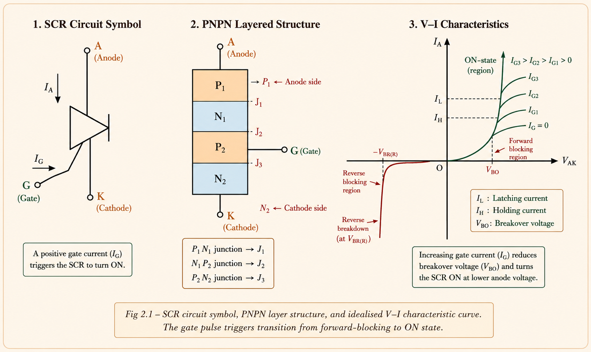
In all rectifier circuit analysis, SCRs are treated as ideal switches. This simplification is standard in Mohan, Rashid, and IIT NPTEL course materials:
| Ideal Assumption | Physical Meaning | GATE Implication |
|---|---|---|
| Zero on-state voltage drop | No conduction loss in SCR | V_T = 0 during conduction; V_o = V_s |
| No reverse leakage current | Perfect blocking in reverse | Reverse current = 0 always |
| Zero turn-on / turn-off time | Instantaneous switching | Transition time tq = 0 (ideal) |
| Zero holding current | SCR stays ON for any positive load current | Extinction angle β: i₀ → 0 |
Many students confuse SCR with a diode. A diode conducts whenever V_AK > 0.7 V. An SCR with V_AK > 0 stays in forward blocking state — it will NOT conduct until a gate pulse is applied at the desired firing angle α. This distinction is fundamental to all GATE questions on firing delay.
The firing angle α (also called trigger delay angle or phase delay angle) is the most important concept in phase-controlled rectifiers. It appears in every formula, every waveform, and virtually every GATE/IES numerical problem in this chapter.
Definition 1: α is the angle between the instant a thyristor would naturally
turn on (as a diode) and the instant it is actually triggered by a gate pulse.
Definition 2: α is measured from the instant that gives the largest
average output voltage.
Definition 3: α is the angle measured from the instant V_AK first becomes
positive to the instant the gate pulse is applied.
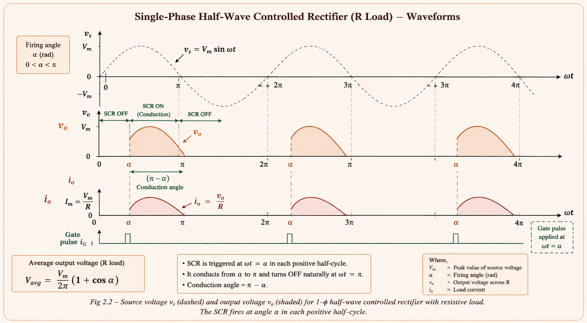
This single formula encapsulates everything about a 1-φ half-wave rectifier with resistive load. Notice that when α = 0°, \(V_o = V_m/\pi\) (maximum, same as an uncontrolled half-wave rectifier). When α = 180°, \(V_o = 0\). The control is smooth and continuous — this is the power of phase control.
The average value is simply the area under the sine curve from α to π, divided by the full period 2π. As α increases, you chop off more of the positive sine lobe, so the average falls. The (1 + cos α) term is a direct result of integrating sin(ωt) and evaluating at the limits.
This is the foundation circuit. With a resistive load, the output current is directly proportional to the output voltage at every instant. The SCR turns OFF naturally (due to zero crossing of current) at ωt = π.
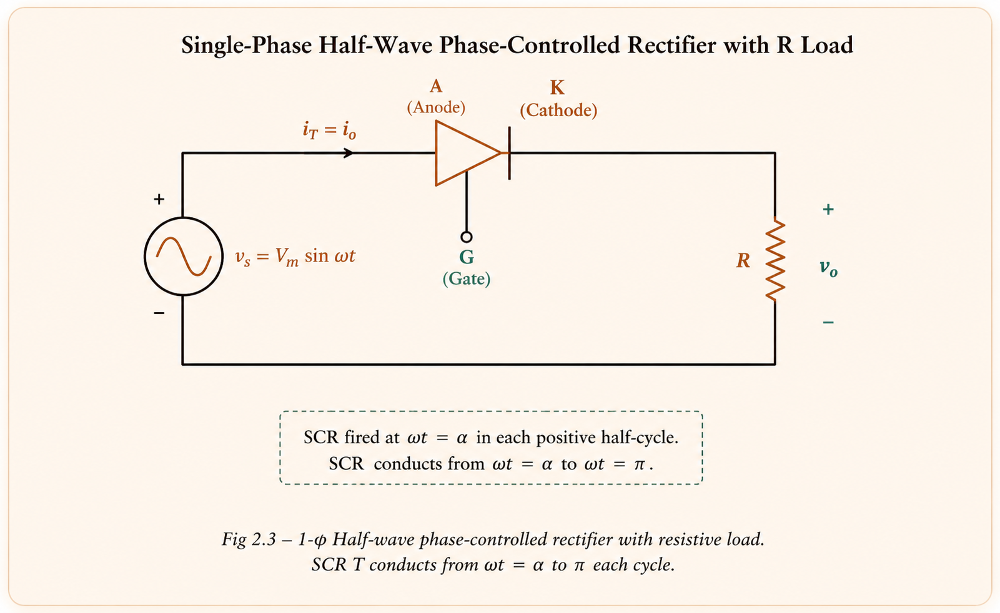
SCR conducts from ωt = α to π, then remains reverse-biased from π to (2π + α). The circuit turn-off time is \(t_c = \pi/\omega\). This gives the SCR ample time to recover — important for reliable commutation.
At α = 0°, the maximum average output of the half-wave rectifier is \(V_{o,max} = V_m/\pi\). Many students write V_m/2 — this is wrong! V_m/2 would be the average of a full sine wave over a half period. For half-wave rectifier: V_m/π. For full-wave: 2V_m/π. Memorise both.
Adding inductance L to the load fundamentally changes the circuit behaviour. Inductance resists sudden current changes, so the load current cannot fall to zero at ωt = π. It continues beyond π into the negative half-cycle of the source voltage — this is the extinction angle β effect.
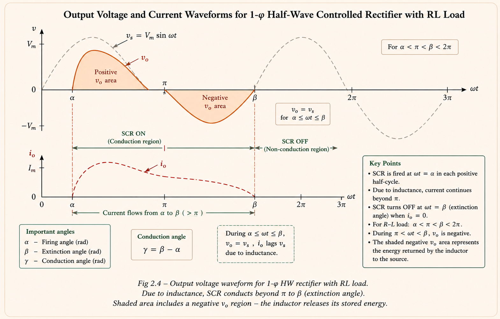
Where β is the extinction angle — found by solving the circuit differential equation. β depends on both α and the load impedance ratio L/R (the load time constant). Note that β > π always for RL load (SCR conducts into negative half cycle).
For R load: \(t_c = \pi/\omega\). For RL load: \(t_c = (2\pi-\beta)/\omega < \pi/\omega\). Since β> π, the turn-off time is reduced. If β approaches 2π + α (continuous conduction), the SCR has no time to recover — commutation failure. This is why freewheeling diodes are added.
Adding a back-EMF source E (representing a DC motor or battery) to the RL load introduces a minimum firing angle constraint. The SCR can only fire when the source voltage \(V_m\sin(\omega t) > E\). This occurs first at angle \(\theta_1 = \sin^{-1}(E/V_m)\).
GATE and IES problems involving RLE load (typically a DC motor being charged or braked) test three key ideas: (1) Finding minimum α from E/V_m, (2) Computing average load current I₀ = (V₀ − E)/R, and (3) Recognising that power delivered to EMF source E equals E·I₀ while heat dissipated in R equals I²_or·R. The sum gives total input power from the AC source.
Full-wave rectifiers use both half-cycles of the AC supply, effectively doubling the pulse number. The output has less ripple and the average output voltage is twice that of the half-wave circuit. Two configurations exist: the Mid-Point (centre-tapped) and the Bridge.
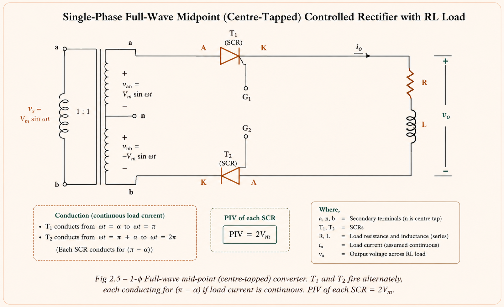
When T₂ fires at ωt = (π + α), a reverse voltage of magnitude 2V_m sin α is applied to T₁, forcing it off. This is natural (line) commutation — the supply voltage itself turns off the outgoing thyristor. Circuit turn-off time: \(t_c = (\pi-\alpha)/\omega\).
The bridge configuration uses four SCRs (T₁, T₂, T₃, T₄) arranged in an H-bridge. No centre-tapped transformer is needed, making it more economical. Thyristor pairs (T₁,T₂) and (T₃,T₄) fire simultaneously, separated by π radians.
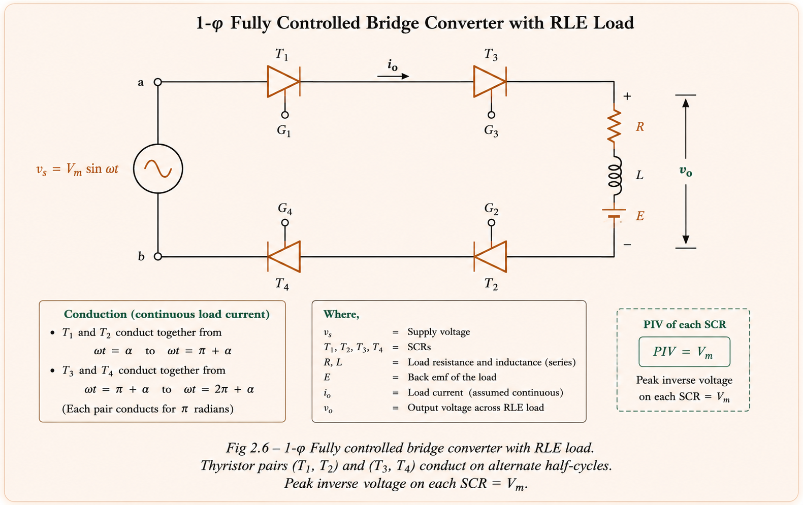
PIV: Mid-point SCRs face PIV = 2V_m; Bridge SCRs face PIV = V_m. So for the same rating, bridge handles double the voltage. Transformer: Bridge needs no centre tap, so transformer utilisation factor (TUF) is much better. Cost: Bridge uses 4 SCRs vs 2 — but no expensive mid-tap transformer. Bridge wins for practical industrial applications.
| Parameter | Mid-Point Converter | Bridge Converter |
|---|---|---|
| Number of SCRs | 2 | 4 |
| PIV per SCR | 2V_m | V_m |
| Transformer Required | Centre-tapped (costly) | Simple 1:1 (or none) |
| V_o (continuous) | (2V_m/π) cos α | (2V_m/π) cos α |
| Turn-off time t_c | (π − α)/ω | (π − α)/ω |
| Quadrant operation | I & IV | I & IV |
When the firing angle is pushed beyond 90°, the average output voltage \(V_o = (2V_m/\pi)\cos\alpha\) becomes negative. If the load contains a DC source E (such as a DC motor in regenerative braking), power flows from the DC side back to the AC supply. This is the line-commutated inverter mode.
1. α > 90° (so V_o is negative)
2. Load EMF E must be negative (motor field reversed or rotation reversed)
3. |E| > |V_o| (otherwise current direction reverses — not possible with SCRs)
Net effect: DC source E drives current through converter, which feeds power back to the
AC supply. Used in: regenerative braking of DC motors, HVDC reversal.
A single-phase fully controlled converter feeds RLE load (R = 10Ω, L = large → continuous current, E = 50 V). Source = 230 V rms, 50 Hz. Firing angle α = 60°. Find average load current I₀.
Approach:
For continuous conduction: \(V_o = \frac{2V_m}{\pi}\cos\alpha = \frac{2\times
230\sqrt{2}}{\pi}\cos 60° = 146.4\;\text{V}\)
Then: \(I_0 = \frac{V_o - E}{R} = \frac{146.4 - 50}{10} = 9.64\;\text{A}\)
Power factor = 0.9 cos 60° = 0.45 lagging
A semi-converter (also called a half-controlled or asymmetrical converter) uses two SCRs and two diodes in a bridge configuration. It operates only in one quadrant (first quadrant — positive V_o and positive I_o), making it simpler and cheaper than the full converter for applications that don't need regeneration.
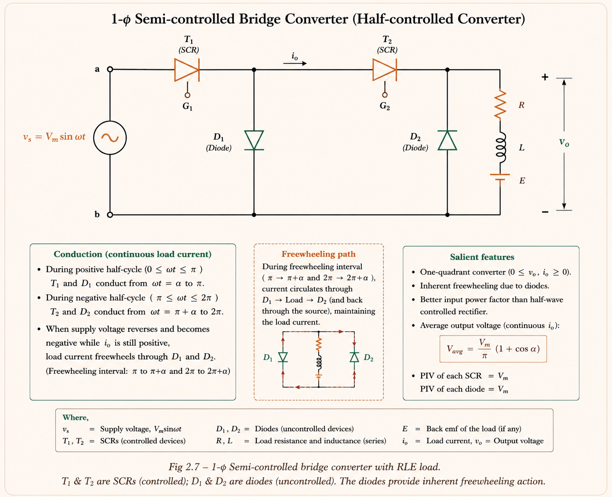
1. Higher V_o for same α (because V_o = V_m(1+cosα)/π vs 2V_m cosα/π — semi
is always ≥ full converter output).
2. Only 2 SCRs needed (cheaper gate drive circuits).
3. Input power factor is better due to inherent freewheeling.
Limitation: Only first-quadrant operation — no regenerative braking.
A half-controlled single-phase bridge rectifier supplies an RL load with continuous current. Firing angle is α. The fraction of the cycle for which the freewheeling diode conducts is —
Key insight: In each full cycle (2π), freewheeling occurs for a total of 2α radians — once per half cycle for duration α. Fraction = 2α/(2π) = α/π.
A freewheeling diode (FD), also called a bypass diode or commutating diode, is connected across the load (cathode toward positive bus). It solves two critical problems that arise with inductive loads.
When source voltage V_s reverses (at ωt = π), the FD becomes forward biased. Load current, which inductance refuses to stop instantly, is now diverted through the FD (not back through the SCR). The SCR is immediately reverse biased and turns off. Turn-off time is now \(t_c = \pi/\omega\) — the maximum possible for this circuit.
| Benefit of Adding FD | Without FD | With FD |
|---|---|---|
| Average output voltage | (V_m/2π)(cosα − cosβ) | (V_m/2π)(1 + cosα) — Higher |
| Output current waveform | Worse ripple | Smoother, less ripple |
| Circuit turn-off time | (2π − β)/ω — Smaller | π/ω — Maximum |
| Input power factor | Lower | Improved |
| Energy from L during freewheeling | Returns to source | Delivers to load R (useful) |
| V_o becoming negative? | Yes — V_o < 0 during β > π | No — FD prevents negative V_o |
With FD: \(V_o = (V_m/2\pi)(1+\cos\alpha)\) — same formula as R-only load. Without FD: \(V_o = (V_m/2\pi)(\cos\alpha - \cos\beta)\) — β depends on load. Many students apply the R-load formula to RL-without-FD. Always check whether a FD is present.
IES frequently asks: "State the advantages of connecting a freewheeling diode across an inductive load in a phase-controlled rectifier." The four standard answers are:
1. Input power factor is improved.
2. Load current waveform is smoother (lower ripple).
3. Load performance is better (consequence of smooth current).
4. Overall converter efficiency is improved (energy stored in L is delivered to R
during freewheeling, not returned to source).
Three-phase rectifiers are used for higher power levels (typically > 5 kW). They produce more pulses per cycle, resulting in lower ripple, higher average output, and better utilisation of the supply. The 3-φ half-wave converter is a 3-pulse converter — three thyristors, one per phase.
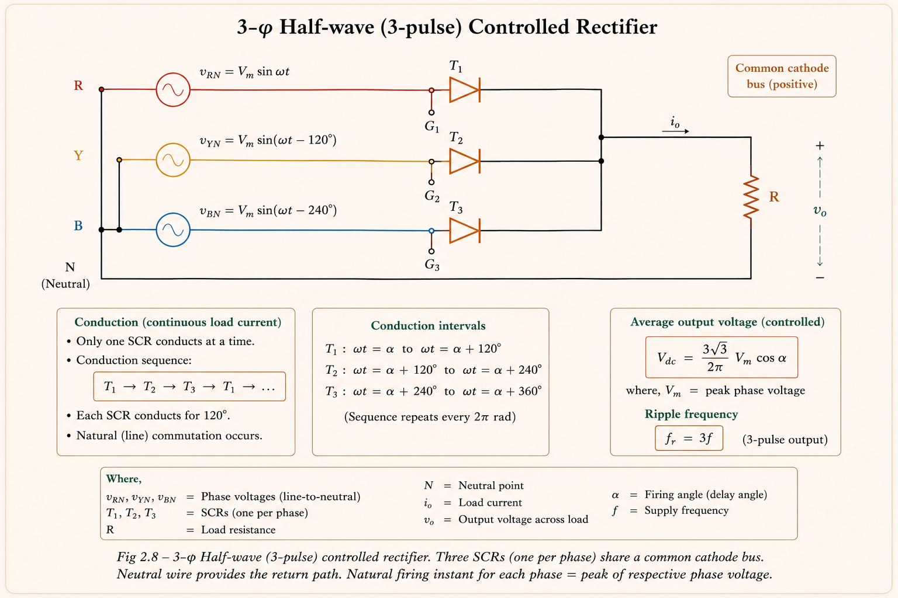
The natural commutation point for each SCR is where its phase voltage is highest — at (π/6 + phase offset) = 30° for phase R, 150° for phase Y, 270° for phase B. The firing angle α is measured from this natural commutation point.
For α ≤ 30°: Load current is always continuous (even with R
load). Each SCR conducts for exactly 120°. The standard formula \(V_o =
(3V_{mL}/2\pi)\cos\alpha\) applies.
For α > 30°: With resistive load, current becomes
discontinuous. The output has gaps. A different integration limit applies and a
modified formula must be used. GATE problems specify "highly inductive load" to
ensure continuous conduction — then the standard formula always works.
A 3-φ HW controlled rectifier is operated from 400 V (L-L), 50 Hz supply. Load R = 10 Ω. Required average output = 50% of maximum possible. Find α.
Solution:
\(V_{o,\max} = \frac{3\sqrt{3} \times 400\sqrt{2}/\sqrt{3}}{2\pi} =
\frac{3\sqrt{6}\times 400}{2\pi \cdot \sqrt{3}}\)... (simplifies)
\(\frac{V_o}{V_{o,\max}} = \cos\alpha = 0.5 \Rightarrow \alpha = 60°\)
Wait — for R load and α > 30°, use the discontinuous formula. But for
inductive load: α = 67.7° (see GATE 2007 solution).
The 3-φ fully controlled bridge is the workhorse of industrial power electronics. It uses six SCRs — three in the positive group (P₁, P₂, P₃ — common cathode) and three in the negative group (N₁, N₂, N₃ — common anode). Together they form a 6-pulse rectifier producing very low ripple.
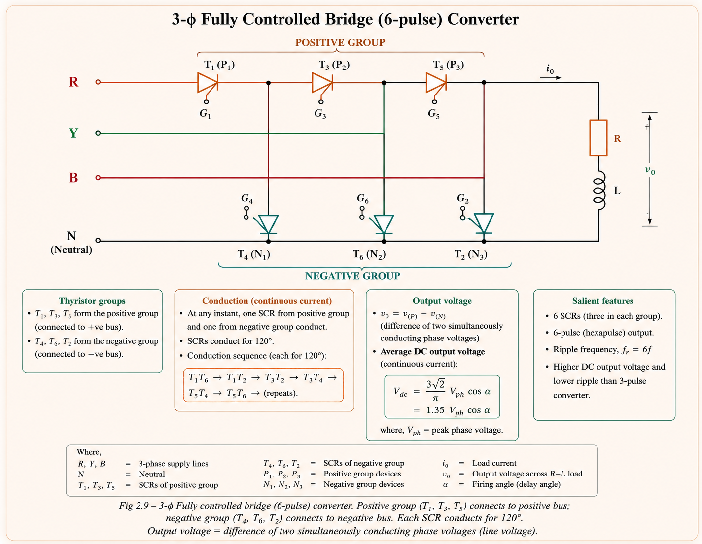
The six SCRs fire in sequence: T₁→T₂→T₃→T₄→T₅→T₆, separated by 60° each. At any instant, one from the positive group and one from the negative group are conducting simultaneously, and the output voltage equals the corresponding line voltage.
At α = 0°, a 3-φ full bridge produces \(V_o = 1.35\,V_{LL}\). For a 415 V (L-L) supply: V_o ≈ 560 V DC. This rule-of-thumb is used in industrial drive sizing. GATE often gives V_LL and asks for V_o at a given α — always compute \(V_o = 1.35\,V_{LL}\cos\alpha\).
| Parameter | 1-φ Full Bridge | 3-φ Half Wave | 3-φ Full Bridge |
|---|---|---|---|
| Pulse number (p) | 2 | 3 | 6 |
| V_o (continuous, α=0°) | 2V_m/π = 0.9V_s | 3√3·V_ph/2π | 1.35·V_LL |
| V_o formula | (2V_m/π)cosα | (3V_mL/2π)cosα | (3V_mL/π)cosα |
| Ripple frequency | 2f | 3f | 6f (lowest ripple) |
| PIV per SCR | V_m | √3·V_mp | √3·V_mp = V_mL |
| Number of SCRs | 4 | 3 | 6 |
A 3-φ fully controlled rectifier operates from a 3-φ star-connected 400 V, 50 Hz AC supply. Load inductance is large enough to maintain ripple-free current. Find firing angle if output voltage = 86.66% of maximum possible output voltage.
\(V_{o,\max} = \frac{3V_{mL}}{\pi}\)
\(\frac{V_o}{V_{o,\max}} = \cos\alpha = 0.8666 \Rightarrow \alpha =
\cos^{-1}(0.8666) = 30°\)
In real systems, the AC supply lines always have some inductance L_s (transformer leakage inductance + line inductance). During commutation from one SCR to the next, this inductance prevents instantaneous current transfer — the current must change gradually. This creates the commutation overlap angle μ.
During the overlap period μ, both the outgoing and incoming SCRs are simultaneously conducting. The source is effectively short-circuited through L_s — output voltage drops to zero during this interval. This reduces the average output voltage below the ideal value.
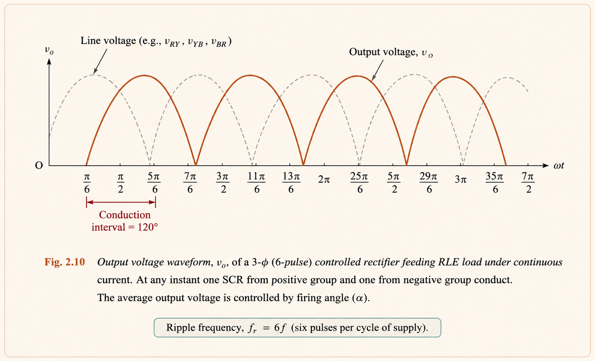
The voltage drop ΔV = ωL_s·I_o/π (per pulse pair) acts like an equivalent resistance called the commutation reactance drop. It represents the average voltage lost per cycle due to commutation. This is why the equivalent circuit of a converter with source inductance looks like an ideal converter with an internal resistance \(R_{comm} = X_s/\pi\).
GATE tests three things about source inductance: (1) The voltage drop formula \(\Delta V = \omega L_s I_o / \pi\), (2) The relationship between α, μ and I_o via the cosine expression, and (3) The fact that source inductance reduces output voltage but does NOT reduce the maximum achievable firing angle. The commutation angle μ must satisfy (α + μ) < π for successful commutation.
A single phase-controlled bridge operates in two quadrants (I and IV — positive current, both positive and negative voltage). To achieve four-quadrant operation (both positive and negative current AND voltage), two converters are connected back-to-back antiparallelly. This is the dual converter.
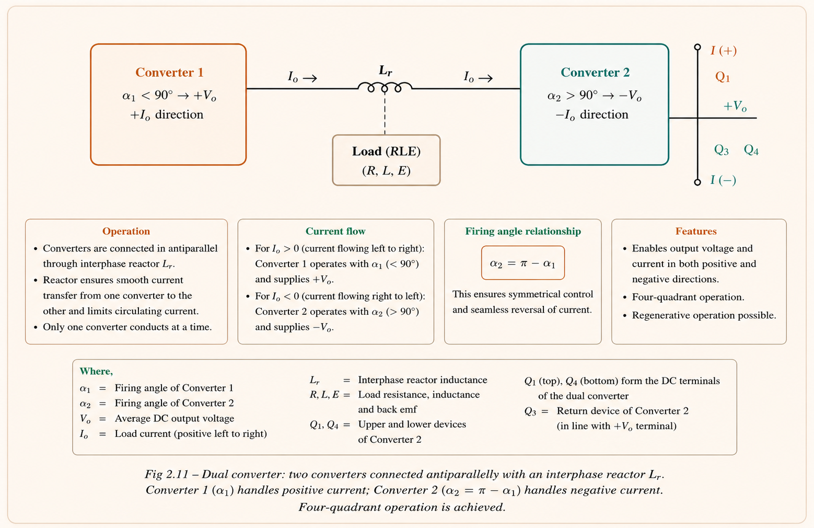
For the dual converter to work without short-circuit, the firing angles of the two converters must satisfy: \(\alpha_2 = \pi - \alpha_1\). This ensures \(V_{o1} = -V_{o2}\) (KVL: \(V_{o1} + V_{o2} = 0\)). In practice, a small interphase reactor L_r is connected between converters to limit circulating current from the instantaneous voltage difference.
| Mode | α₁ | α₂ | V_o | I_o | Quadrant |
|---|---|---|---|---|---|
| Motoring (forward) | < 90° | > 90° | +V | +I | I |
| Regen. braking (forward) | > 90° | < 90° | −V | +I | II |
| Motoring (reverse) | > 90° | < 90° | −V | −I | III |
| Regen. braking (reverse) | < 90° | > 90° | +V | −I | IV |
Dual converters power reversible DC motor drives in rolling mills, paper machines, and crane hoists where the motor must accelerate, run, decelerate, regenerate, and reverse — all at full torque. The interphase reactor is often the heaviest single component in the drive panel.
| Converter | V_o (Average, Continuous) | V_or (RMS) | Input pf |
|---|---|---|---|
| 1-φ HW, R load | (V_m/2π)(1+cosα) | Complex expression | V_or/V_s |
| 1-φ HW + FD (RL) | (V_m/2π)(1+cosα) | — | Improved |
| 1-φ Full Bridge | (2V_m/π)cosα | V_m/√2 = V_s | 0.9cosα |
| 1-φ Semi-converter | (V_m/π)(1+cosα) | — | Better than full |
| 3-φ HW (3-pulse) | (3V_mL/2π)cosα | — | — |
| 3-φ Full Bridge (6-pulse) | (3V_mL/π)cosα ≈ 1.35V_LL·cosα | V_mL/√2 ≈ V_LL | ≈(3√2/π)cosα |
1. Using V_m/π (half-wave formula) for a
full-wave bridge question.
2. Forgetting to multiply by √2 to get
V_m from V_rms: \(V_m = \sqrt{2}\times V_{rms}\).
3. Applying continuous conduction
formula when load is R-only and α is large (may be
discontinuous).
4. Confusing PIV: mid-point converter
has PIV = 2V_m; bridge has PIV = V_m.
5. Forgetting that power factor of full
bridge ≈ 0.9cosα (not cosα itself).
Type any question about AC-DC converters, or tap a suggestion to get a step-by-step GATE-focused answer instantly.
Firing angle α controls V_o. α measured from natural commutation point. Ideal SCR: zero drop, zero t_q. V_o decreases as α increases from 0° to 180°.
HW: V_m(1+cosα)/2π. Full bridge: 2V_m cosα/π. Semi: V_m(1+cosα)/π. pf ≈ 0.9cosα for full bridge. PIV: bridge = V_m, mid-pt = 2V_m.
Prevents negative V_o with RL load. Restores t_c = π/ω. Improves pf and current waveform. FD conduction fraction = α/π per cycle.
HW (3-pulse): V_o = 3V_mL cosα/2π. Full bridge (6-pulse): V_o = 3V_mL cosα/π ≈ 1.35V_LL cosα. 6-pulse has lowest ripple (ripple freq = 6f).
Creates overlap angle μ. Reduces V_o by ωL_s·I_o/π. Acts as commutation resistance. cos(α+μ) = cosα − ωL_s·I_o/V_m.
Two bridges antiparallel → 4-quadrant. α₁ + α₂ = π. Interphase reactor limits circulating current. Used in reversible DC drives.
All technical content, explanations, derivations, SVG circuit diagrams, and waveform illustrations are original to Aarova AI. Key concepts are derived from the following standard textbooks and academic resources.